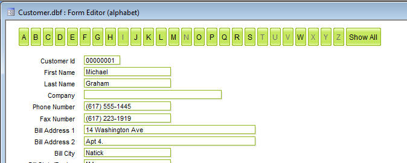
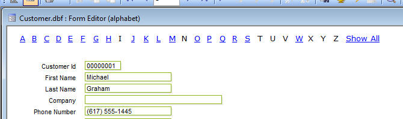
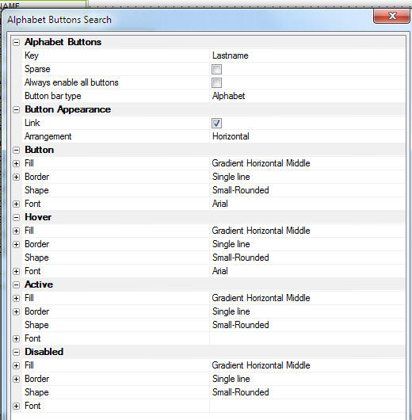
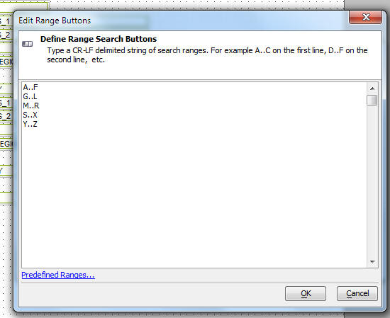
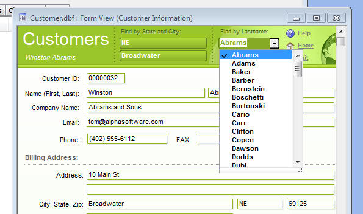
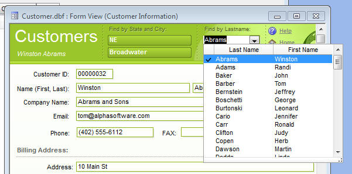
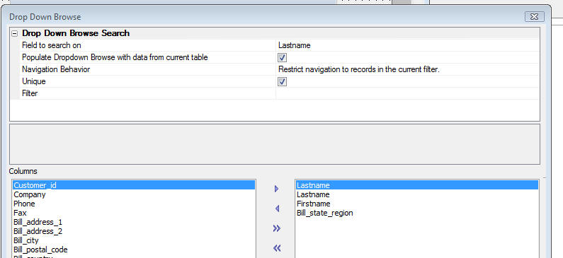
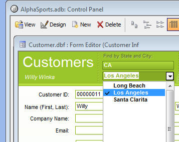

Supercontrols
Alphabet Button Search Bar Supercontrol
This supercontrol puts a series of buttons or hyperlinks on the form that allow you to quickly search for records matching the letter of the button that you click.
The buttons can be shown as buttons or hyperlinks (see 2nd image).


To place an Alphabet button supercontrol on a form, select Supercontrols in the Form Toolbox and then select the 'Alphabet Buttons' Search supercontrol. Draw the area on the form where you want the supercontrol to appear. When you release the mouse button, the dialog comes up that allows you to define the supercontrol.

The dialog give you a great deal of control over the appearance of the buttons. The most important properties that you will have to set are:
Key - Specify what field to search on when you click on a button. You can choose any field in the top level table of the form, or
Sparse - Only show button if there are records that match the letter. For example, if the Key is set to Lastname, only show a button for 'M' if there are records for lastnames starting with 'M'. For large tables it is recommended that you not select this option because it can be time consuming to figure out which buttons should be shown.
Always enable all buttons - If there are no matching records for a particular letter, the button for that letter can be disabled.
For large tables it is recommended that you not select this option because it can be time consuming to figure out which buttons should be disabled.
Button bar type - The options are: Alphabet, Numeric, Alpha-Numeric and Ranged Buttons. The Numeric option will show buttons for 0 - 9. The Alpha-Numeric option will show buttons for A - Z and 0 - 9. The Ranged Buttons options allows you to define the buttons you want.
When you select this option the 'Ranged Button' builder is exposed. For example, in the dialog below we have specified that 5 buttons should appear. When you click the first button (A..F), all records for which the key value starts with A, B, C, D or F will be found.
Link - Check this option to show the buttons as hyperlinks.

Drop Down Browse Supercontrol
This supercontrol displays a Drop Down Browse showing records (typically from the current table). When you select a record in the Drop Down Browse, Alpha Five will search for a matching record in the Form.
The image below shows a Drop Down Browse defined for the Lastname field. The image shows the control with the the browse open. When you click on a row in the browse, the Form will navigate to the selected record. You can also type an entry into the control directly and press enter (without having to open the Drop Down Browse).

In the above example, the browse is a single column. There is no limit as to how many columns the browse can contain. The image below shows a browse with two columns.

To place a Drop Down Browse supercontrol on a Form, select Supercontrols in the Form Toolbox and then select the 'Drop Down Browse' supercontrol. Draw the area on the form where you want the supercontrol to appear. When you release the mouse button, the dialog comes up that allows you to define the supercontrol.

The important properties in this dialog are:
Field to search on - Specify which field in the top level table in the Form you want to search on.
Populate Dropdown Browse with data from current table - Specify if the drop down browse is populated with data from the current table (that the Form is based on), or some other table.
Navigation Behavior - Specify an option for how the Drop Down Browse should operate. The options are:
| Show all records when user navigates | When user makes a selection from Drop Down Browse remove the current filter (if any) on the Form. |
| Query when user navigates | When user makes a selection from the Drop Down Browse perform a query, rather than a 'Find by Key' (Active link tables automatically use this option, since Find by Key is not supported for Active-link tables.). |
| Restrict navigation to records in the current filter | The choices shown in the Drop Down Browse are restricted to records in the current Form filter. |
Unique - Specify if only unique values should be shown. For example, if you are showing a list of state names in the current table (say a customer table), you would want to ensure that no duplicate values are shown.
Filter - Specify a filter for the records to be shown in the dropdown browse. This option makes it very easy to define cascading drop down browses. See Cascading Drop Down Browse below for more information.
Cascading Drop Down Browse
In a series of cascading Drop Down Browses, a selection in one Drop Down Browse affects the choices in the next Drop Down Browse. For example, the image below shows two Drop Down Browses to search the customer Form on State, and then within a selected State, by City. The image shows that the 'parent' Drop Down Browse has the value for 'CA' selected. The cascading Drop Down Browse only shows the cities in California.

In the definition of the Drop Down Browse for the City browse, the Filter property was defined as follows: